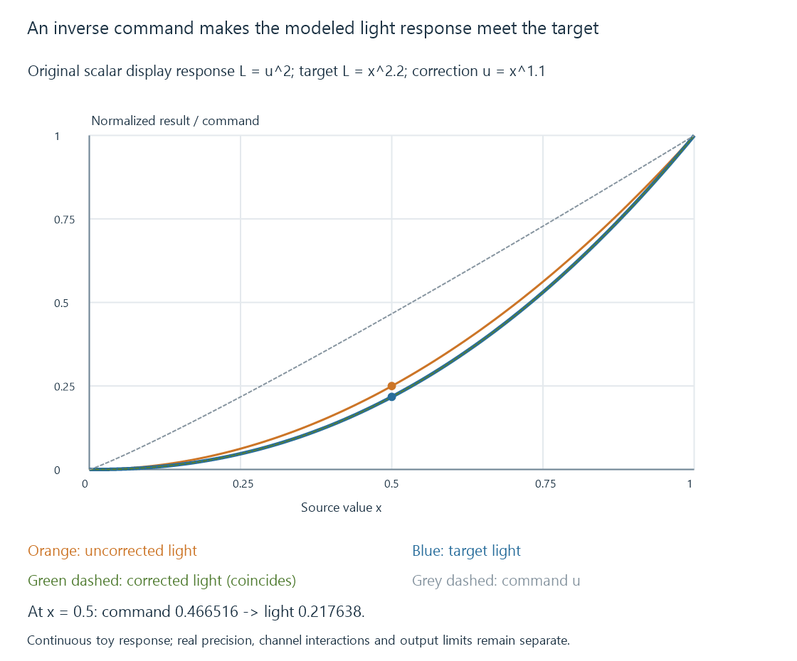

Display color calibration
Display calibration adjusts a defined output state toward a chosen target, while characterization and profiling describe how that state reproduces colors.
Calibration starts with a target: the behavior a display should produce in a defined viewing and signal state. Measurement then shows how its current output differs from that target, and suitable controls reduce the difference.
An ICC profile serves a related but different purpose. It describes the characterized color behavior so a color-managed route can interpret and transform colors appropriately.
Adjustment and description are separate operations
The ICC’s display guidance treats calibration and profiling together: first establish a desired display behavior, then communicate the resulting behavior through a profile.
A display can be adjusted through internal controls or calibration tables. Some arrangements also apply a correction in the graphics/output path. Profiling measures the resulting state and records its color relationships.
If an application uses a profile that describes a different state, its transformation is based on the wrong description. Changing a display preset, white balance or other substantial control after profiling can consequently invalidate that relationship.
A profile copied from another unit also describes another measured response. A shared model name does not prove that the units, modes and ages have identical output.
A target needs a viewing and signal context
| Target property | What must be defined |
|---|---|
| White appearance | Intended chromaticity or white-point reference |
| Luminance | Output suitable for the intended viewing condition |
| Tone response | How encoded levels become light |
| Color reproduction | The source/working space and destination behavior |
| Signal state | SDR/HDR interpretation, range and active display mode |
“Make it look good” does not specify a reproducible target. Conversely, matching a named target numerically does not make every viewing room or every content type use the same presentation.
An Emby video route also needs the correct range interpretation. A limited/full mismatch can crush or lift the dark end before a calibration adjustment is even considered.
An inverse-response exercise
Consider an original one-channel model. Let command u range from zero to one. The uncorrected display produces normalized luminance:
Actual display: L = u²
Desired response to source value x: Ltarget = x^2.2
To achieve the target, solve the actual response for its required command:
u² = x^2.2
u = x^1.1
At source value x = 0.5:
| Route | Command sent | Model luminance |
|---|---|---|
| No correction | 0.5 | 0.25 |
| Inverse correction | 0.466516 | 0.217638 |
| Desired target | — | 0.217638 |

The correction changes the command; the target describes the emitted result. Those are different curves.
This exercise assumes an exact, monotonic scalar response, unlimited command precision and a zero black floor. Real calibration has finite code steps, measurement uncertainty, channel interactions and output limits. Real SDR encodings can also have piecewise responses; this power-law model is not an sRGB, BT.1886 or HDR prescription.
Finite command levels limit the correction
The inverse curve above assumes continuous commands. Suppose an original restricted output can send only 0, 0.25, 0.5, 0.75 or 1.
For the midpoint target, the ideal command 0.466516 must be rounded to an available value. Choosing 0.5 produces 0.25 luminance again, rather than the desired 0.217638.
Knowing the correct curve did not create an extra output level. A higher-precision implemented path can make finer adjustments, while dithering can change the time/spatial distribution of available levels.
Neither case should be described as an exact continuous result without its own assumptions. Measurement tests the combined curve, quantization and display response.
Measurement closes the loop
A useful sequence is to establish the relevant mode, measure selected patches, calculate or choose adjustments, then remeasure their output.
Remeasurement matters because a requested correction and the resulting light are not interchangeable. The display can clip, quantize or apply other processing; the graphics path can change which table is used.
Neutral patches test the balance and tone response of gray output. Colored patches test properties that a gray-only adjustment does not establish. A correction that matches one midpoint does not automatically match the whole curve or gamut.
Instrument behavior and the display’s spectral output also affect the measurement. The required method depends on the accuracy being sought.
A calibrated state has a valid scope
An SDR state and an HDR state can use different transfer interpretation and processing. A curve that compensates a toy SDR response is not a universal correction for PQ.
HDR output can also depend on patch area, surrounding content and duration. If those conditions change during measurement, the observed variation may belong to a brightness controller rather than to an ordinary fixed tone curve.
Peak brightness and automatic brightness limiting explain those conditions. The calibration target should identify which state and patterns were actually characterized.
A calibration cannot create colors or luminance outside the display’s usable output range. Transforming an out-of-gamut color into a reproducible one is a mapping decision, not evidence that the panel acquired a larger gamut.
The player’s complete path needs validation
A photo application using a traditional ICC transform, a video renderer targeting a calibrated output space and an operating system’s Advanced Color route can apply color handling at different stages.
For Emby playback, identify the actual client and renderer route before assuming that a desktop profile applies in exactly the same way everywhere. Display color management develops those responsibilities.